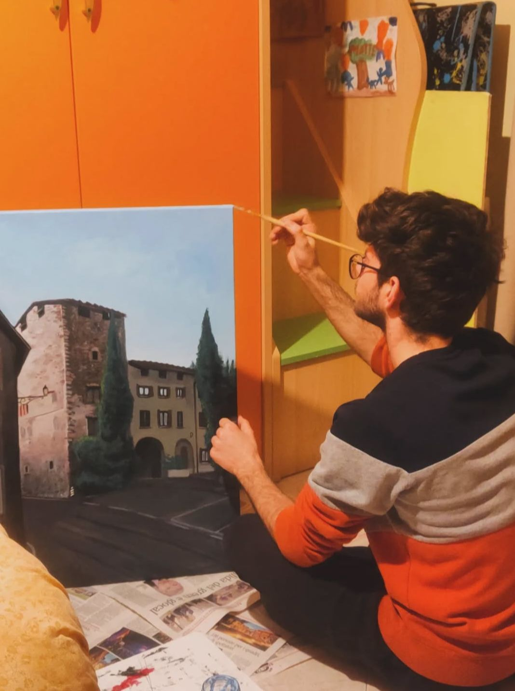

|  |
Matteo Bianchi è un artista contemporaneo di Piancamuno, classe 2005. Ha frequentato il Liceo Artistico Camillo Golgi di Breno e attualmente vive e lavora a Milano dove studia pittura all'Accademia di Belle Arti di Brera. Le sue opere esplorano sentimenti, ricordi e suggestioni legate alle sue origini Camune, non trascurando anche alla sua storia personale affettiva. Nonostante si consideri un paesaggista, Matteo tratta temi come il rapporto fra la natura e l'uomo, le mancanze emotive e le problematiche sociali del nostro tempo. Si ispira ad artisti come Edvard Munch, Giorgio Morandi e ai grandi maestri impressionisti. |
|---|